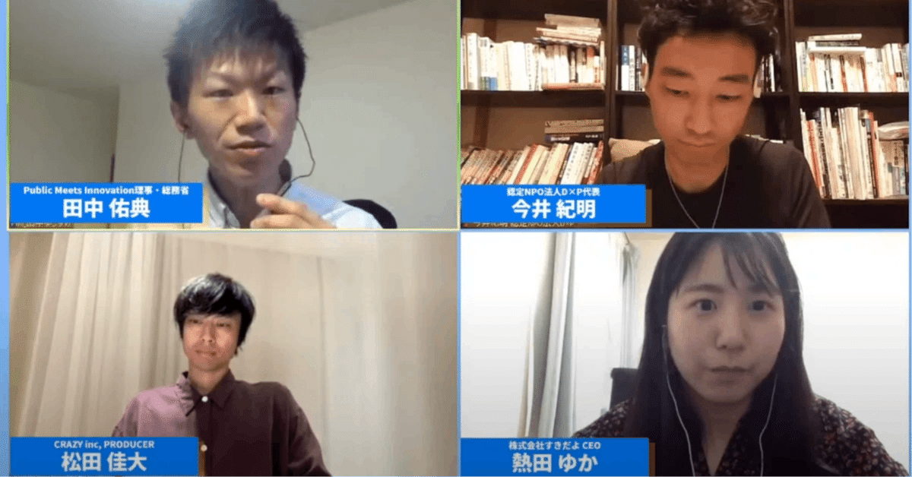

PMI 政策ペーパー＃1「家族イノベーション」
公開トークセッション 第1部（後半）
PublicMeetsInnovation（以下PMI）が4月7日に公開した、ミレニアル世代の官民100人とつくりあげた「ミレニアル政策ペーパー 第1弾」は、
「家族」について考えました。
本記事では4月15日の公開イベントの内容をレポート記事としてお送りしていきます。（公開トークセッション 第1部の前半はこちらです。）
ミレニアル世代と考える家族のカタチ
●モデレーター・田中 佑典（Public Meets Innovation理事・総務省）
●スピーカー・今井紀明さん（認定NPO法人D×P代表）
・松田 佳大さん（CRAZY inc, PRODUCER）
・熱田ゆかさん（株式会社すきだよCEO）
自己紹介
熱田さん（株式会社すきだよ代表）：カップル＆夫婦の価値観を話し合う「ふたり会議」というツールを、LINEで運営しています。我が家では夫婦の対話を大事にしていて、ある時Twitterでつぶやいたことで13万いいねを超える反応があって「みんな同じような悩みを持っているんだな」と、その課題を解決する会社を起業しました。
今井さん（認定NPO法人D×P）：不登校、中退や経済的困難などさまざまな事情をもった10代を支援するNPOと、彼らと繋がる「ユキサキチャット」というLINEサービスをやっています。また、昨年結婚して血の繋がりのない2人の娘とパートナーと暮らしています。今日はその視点からも話ができたらと思っています。
松田さん（株式会社クレイジー）：結婚式を運営する会社でプロデューサーをしています。結婚式場ではなく、キャンプ場や旅のような結婚式をオーダーメイドで作りながら、たくさんの夫婦と向き合って仕事をしています。
僕もプライベートで家族のことをツイートしていたら多くの反響があり、今では恋愛コラムや家族の小説を書くなど全く想像してなかった仕事までしています。
2人の価値観を可視化する「ふたり会議」
田中：「ふたり会議」をはじめたきっかけについて教えていただけますか。
熱田さん：3年ほど前に結婚した時、周りからかけられた言葉に違和感を感じたのがきっかけです。
「結婚は墓場だよ」とか、結婚式場でも「今日が一番幸せな日ですよ」と、当たり前の話として言われて。「結婚式をピークに落下していく結婚って、何なんだろう？」ってすごく違和感を感じたんです。
日本は年間20万件、2分間半に1組のスピードで離婚が成立してるんですよ。それで私、調べたのですが、離婚原因の1位は「価値観の違い」。2位が
「人生観の違い」で3位が「性格の不一致」なんだそうです。
でも私、それを見て思ったんです。「私と価値観も人生観も性格も一致してる人なんて、いるわけないよね？」って。
その価値観の違いを話し合うのが大切なんじゃないかな、って思ったんです。でも現状では、パートナーとしっかり対話する習慣があまり日本にはないですよね。
ちょっと前に、夕飯に冷凍餃子を出したら夫に「えっ」て言われたというTwitterが反響ありましたよね。「食卓にお惣菜も取り入れたい」「キャリアアップのために家事代行を使いたい」「本当は名字を変えたくない」「結婚式は挙げなくていい」など、実は思っていても口に出せないのが現状なのかなと思って。
そこで「ふたり会議」という、価値観をカップルで共有するサービスを作ったんです。
「ふたり会議」では、パートナーが結婚、働き方、家事、子育てなどにどんな価値観を持っているのか、ふたりで質問に答えることが出来ます。
「この項目の価値観は違ってたね」「この項目は似てたね」と、簡単に可視化できる。無料で、LINE上で気軽に3分くらいで出来るサービスです。
結婚を意識した相手にわざわざこういう「アプリ」をダウンロードさせるのはちょっとハードル高いと思うのですが、LINEだったら友だち追加するだけで進んでいくので、気軽に出来るんです。
ミレニアム世代のうちからカップルが価値観を可視化して、モヤモヤを話し合っておく習慣をつけることは、すごく大事だなと思います。
あたりまえの結婚式をしない選択
田中：
松田さんは結婚式場でやる通常のスタイルではない、オーダーメード結婚式のスタイルを提案されています。
松田さん：
間違いなく結婚式は多様になってきています。婚姻、出産、子育て、それらの形は、もう1つじゃなくなったと思います。既成概念が崩れてきているのをすごく感じています。
特に結婚式は、過去70〜80年間ほぼ形が変わらなかった。食事形式がメインで、ケーキカットやお色直しをやるという結婚式を繰り返してきた。
結婚式って、世代をまたぐサービスなんです。例えば僕は今32歳ですけど、親は60代なので30年のギャップを埋めなければいけない。アプリなどテクノロジーを取り入れると素敵でユニークな結婚式になりますが、親の反対に合うことが多いんですね。
いかに諦めずに相手とコミュニケートしていくかが、そういう結婚式をやる上で本当に重要なんです。僕らは結婚式の「箱屋」から「コミニケーション・アドバイス屋」に近づいてると感じています。
田中：
熱田さんの話とも共通しますが、結婚や夫婦に関する価値観って「正しい／正しくない」ではないんですよね。生きてきた時代の中で、ただ「それが当たり前」というのがあった。
熱田さん：
親との「ふたり会議」も作ってほしい、とよく言われます！結婚、お墓、
遺産など、普段なかなか聞きづらい話は親子にもたくさんあるんですよね。
家族になる前の研修があったらいい
田中：
今井さんはステップファーザー／マザーになるための「事前研修」があるといい、と言います。
今井さん：
僕は今の家族と暮らし始める前に、ステップファーザーに関する本をたくさん読んでみたんです。
家族になった時、娘たちは年長さんと小2だったんですが、僕はそれまでの成長過程を見ていないので、どう接していいか分からなかった。なのに、結婚と同時にパートナーの子供（継子）を育て始めることができる、という事実に、自分自身で違和感を感じたこともあって。
自分は仕事で中高生のサポートを10年間やってきたので、初めてとはいえ、娘たちともきっと上手くスタートできると思っていたんです。ですが、分からないことだらけだった。コロナもあり他の家族との横のつながりも作れず、孤立化して結構、悩みました。
そこで勉強してみると「しつけをし過ぎると関係が悪化する」とか「父親と娘が一番合わない組み合わせ」なんてアメリカの文献にはちゃんと書いてある。
その時「ステップファミリーになる際に、事前研修みたいなものがあったらな」と思ったんです。親になるとストレスの軽減のしかたや「受容する力」なども求められますよね。そういう知識を学ぶことはとても大事だと思いました。
知識と同時に大事なのが「愛情の伝え方」。「子供って、親に何をしてもらいたいんだろう」「本当はどう接して欲しいんだろう」って、実はとても難しいところだった。（一同、大きくうなずく）
田中：
自分は3歳の娘がいるのですが、父親というのはステップを踏みながらなっていくものだと、子育てを始めてから思いました。幼い頃から接していくうちに、段々と父親としての自覚も生まれる。
今井さんには、自身に「学ぼう」という姿勢があったわけですが、もう少し社会としてサポートする仕組みがあるといいということですよね。
結婚の話をしていくと最終的にパートナーシップ、コミュニケーションの話になっていくのが三者共通の大きな特徴ですね。
熱田さん：
家族になるための教育とか研修がないというのは、私も強く思ってることです。たとえばアサーションという、人とうまく対話するためのスキルが存在するなど、家族になる上で勉強した方がいいことは、たくさんあると感じます。
行政がやる両親学級は、沐浴（赤ちゃんの入浴）の練習などはやるけれど、産後の女性の体がいかにサポートを必要とするかとか、「産後の鬱」についての講習などはあまりやりません。
何も準備しないまま現場に放り出されることを、みなさんも不安に感じている点、今聞いていてとても共感しました。
松田さん：
子供が0歳で親になった人と、今井さんのように途中から親になった人の接し方の難しさのレベルは、もちろん同じではないけど、でも意外と変わらない部分もあるんじゃないかなという気もします。
育児や親子の関係が「レベル１」の時は、子供も親もお互いレベル１なわけで（一同「確かに」と、大きくうなづく）。だから、一度経験した人の話を参考にするのも必要じゃないかな。
田中：
松田さんはTwitterで積極的に家族のことを公開していらっしゃいますが、松田さんの家族の形って、言い方が難しいんですが、父親、母親、子どもという家族の形、つまり「マジョリティ（多数派）」ですよね。その日常を公開していく中でネガティブなコメントが来ることはありますか。
松田さん：
バッシングはもちろんあります。産みたくても産めない人をどう考えているの、とか。僕と僕の奥さんしかフォローしてない怖いアカウントもあるくらいです。
マジョリティという考え方をなくすことが必要なんだろうと思います。僕は東京に住んで奥さんが働いてないことで、金銭的なプレッシャーも感じるけど、でも奥さんの「働かずに子供との時間を大切にしたい」という気持ちを尊重したかった。たとえそれで生活が苦しくなったとしても、自分の幸せはそこにあると感じられるかどうか、だと思うんです。
自分らしくていい、家族のカタチ
田中：
これから私たちはどういう方向を目指していったらいいのか。そのために何ができるのか。みなさんのお仕事の経験などからも含め、最後に一言、いただけますか。
熱田さん：
「ふたり会議」をやっていて「自分の心が整理できてよかった」という声をユーザーさんからいただくことがあります。「やっぱりお惣菜は使っちゃだめだよな」「家事代行を使ってみたいな」と本当は思っているのに、その気持ちに自分自身で向き合ってこなかったことが、ふたり会議で自分に質問されることによって、「私って実は料理が苦手じゃん」「お惣菜に頼りたい気持ちがあるじゃん」みたいなことに気づくことがあるんです。
普通に過ごしていると「やっぱり結婚式ってやらなきゃいけないよな」「名字はやっぱり女性が変えないといけないよな」と思ってしまうけれど、多様な家族の選択がある中、「自分はどうしたいのか」を考えるのがすごく大事だと思います。２人らしいパートナーシップを築いて、２人らしい家庭運営をする人が増えていけば、これから日本はめちゃくちゃハッピーになるなって思っています。
今井さん：
僕はまだ家族になってからの時間が短いですが、家族になるための知識は必要だと思います。研修を行政がやるべきか民間なのか、そのあたりも考え、動いていく必要性をすごく感じています。
「自分が父親にならなきゃ」という考えに縛られて、悩みました。でも本当の父親は別にいるんだし、自分が必ずしも父親じゃなくてもいいのかも、と今は思えています。娘たちも僕のことは名前で呼んでくれています。
自分の今の仕事（認定NPO法人D×P）で感じていることですが、虐待には継父、継母のケースがあるんです。虐待する継父は「自分は父親だから」という考えに囚われ過ぎて、強くしつけをしてしまい、結果的に暴力にまで発展することがある。先日も継父による痛ましい虐待死事件が報道されましたが、本当は防げる事故だったのでは、と思うところが僕にはあります。
「親という決まった概念に縛られなくていい」ということ伝えていく必要がある。知識を学んでいく必要があるのではないかと思ってます。
松田さん：「自分の家族のカタチ」に向き合える社会になればいいなと思います。他の家族のやり方に目移りする必要は一切ないと思う。何に幸せを感じるかは本当に人によって全然違う。リラックスして休んでいる時が幸せな人もいれば、アクティブである時に幸せを感じる人もいる。その多様性に向き合えるサービスや社会を僕たちが作っていけたらいいなと思います。
〜〜〜〜〜〜〜〜〜〜〜〜〜〜〜
●パートナーとお互いの価値観を可視化することの重要性を感じ、行動を起こした熱田さん。「皆が自分らしい家庭運営」を行うことができれば、日本はもっとハッピーになるとおっしゃいました。
●70〜80年間変わらなかった結婚披露宴の形を、自分たちの結婚式ではやらないという選択。それを全力でサポートする業会の革命児CRAZYで、松田さんは異なる価値観の人・世代といかに諦めずにコミュニケートすることの重要性を改めて示してくださいました。
●親になる時、ステップマザー／ファーザーになる時。私たちは、学校で親になるための教育を受けません。いきなり現場に放り込まれる前に、知識を得る機会があればいいと言う、今井さん。行政がやるべきか民間がやるべきか、私たちも考えていきたい大きなテーマです。
それぞれ違った家族のカタチがあり、そこには優劣などなく、どんな家族のカタチを選択しても、フラットに認め合える社会を作っていきたいと思います。ぜひフィードバックをいただき、皆さんとこれからの家族のあり方を引き続き考えていきたいと思います。
記：村松優里英（PMIインターン）
（おまけ）
セッションをご視聴してくださった方が、付箋ワークを使って素敵なまとめをして下さいました！
https://twitter.com/sexual_balance/status/1382668446823976960?s=20
きしなおさん：
@sexual_balance
仲人あおいさん：
@aoiao00
ありがとうございました！
《4月15日の公開トークセッション 第2部 も後日アップします！》